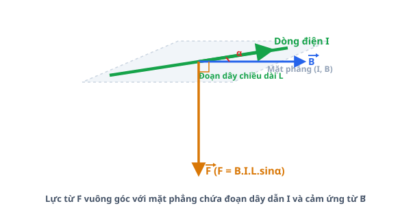
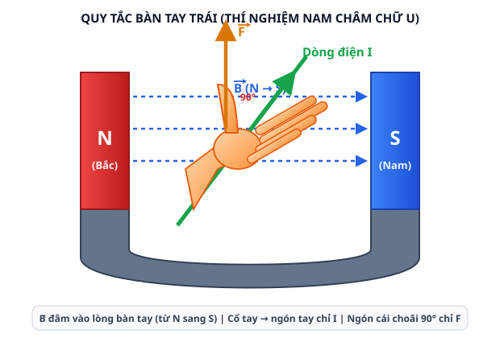
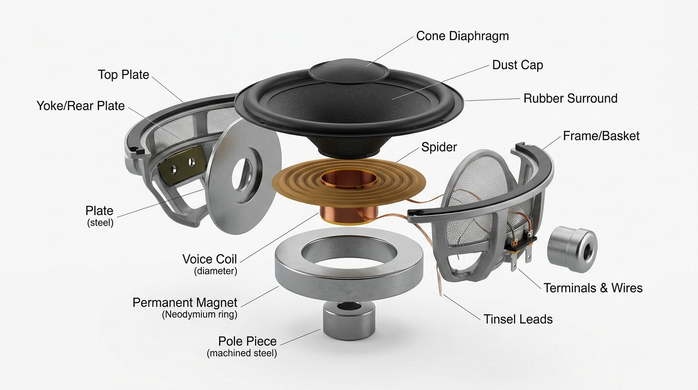
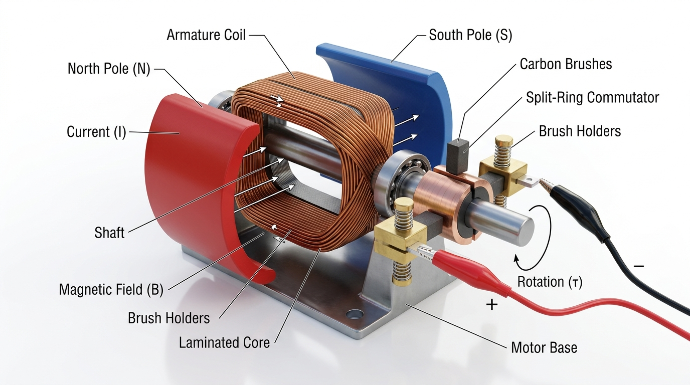
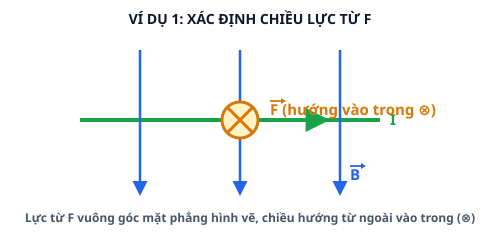
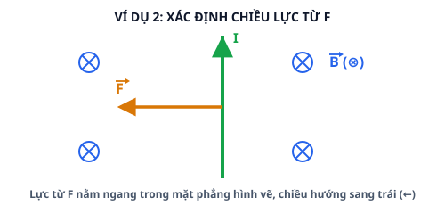
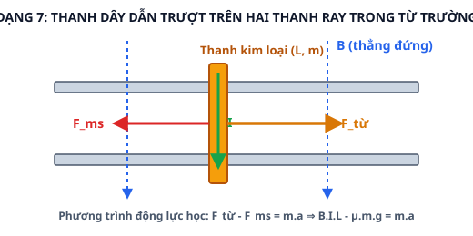

Bài 15: Lực Từ Tác Dụng Lên Dây Dẫn Mang Dòng Điện. Cảm Ứng Từ
NỘI DUNG BÀI HỌC
1. Lực Từ Tác Dụng Lên Dây Dẫn Mang Dòng Điện
Xét một đoạn dây dẫn thẳng có chiều dài $L$ mang dòng điện cường độ $I$ đặt trong một từ trường đều có cảm ứng từ $\vec{B}$. Lực từ $\vec{F}$ tác dụng lên đoạn dây dẫn được xác định bởi định luật Ampère.
• $B$: Độ lớn cảm ứng từ của từ trường (đơn vị Tesla - $\text{T}$).
• $I$: Cường độ dòng điện chạy qua dây dẫn ($\text{A}$).
• $L$: Chiều dài đoạn dây dẫn nằm trong từ trường ($\text{m}$).
• $\alpha = (\vec{B}, \vec{I})$: Góc hợp bởi vectơ cảm ứng từ $\vec{B}$ và chiều dòng điện.

Hình 15.1: Minh họa phương, chiều và độ lớn của lực từ $\vec{F}$ (hướng xuống) tác dụng lên đoạn dây dẫn mang dòng điện $I$ trong từ trường đều $\vec{B}$.
Khi dây dẫn đặt vuông góc với các đường cảm ứng từ ($\alpha = 90^\circ \Rightarrow \sin 90^\circ = 1$): $$\mathbf{F_{\max} = B \cdot I \cdot L}$$
Khi dây dẫn đặt song song với các đường cảm ứng từ ($\alpha = 0^\circ$ hoặc $180^\circ \Rightarrow \sin\alpha = 0$): $$\mathbf{F = 0}$$
2. Quy Tắc Bàn Tay Trái
Phương của lực từ $\vec{F}$ vuông góc với mặt phẳng chứa đoạn dây dẫn và vectơ cảm ứng từ $\vec{B}$. Chiều của lực từ được xác định bằng Quy tắc bàn tay trái:
Đặt bàn tay trái duỗi thẳng sao cho các đường cảm ứng từ $\vec{B}$ đâm xuyên vào lòng bàn tay.
Chiều từ cổ tay đến các đầu ngón tay chỉ chiều của dòng điện $I$.
Khi đó, ngón tay cái choãi ra $90^\circ$ chỉ chiều của lực từ $\vec{F}$ tác dụng lên đoạn dây dẫn.

Hình 15.2: Minh họa Quy tắc bàn tay trái trong thí nghiệm nam châm: Đường cảm ứng từ $\vec{B}$ đâm vào lòng bàn tay, chiều từ cổ tay đến các ngón tay chỉ $I$, ngón cái choãi $90^\circ$ chỉ chiều lực từ $\vec{F}$.
3. Độ Lớn Cảm Ứng Từ B Và Đơn Vị Tesla
Cảm ứng từ $\vec{B}$ là đại lượng vectơ đặc trưng cho từ trường về mặt tác dụng lực:
Trong hệ SI, đơn vị của cảm ứng từ là Tesla (kí hiệu: $\text{T}$): $$1\text{ T} = \frac{1\text{ N}}{1\text{ A} \cdot 1\text{ m}}$$
4. Ứng Dụng Thực Tế Kỹ Thuật
4.1. Loa điện động (Loudspeaker)

a) Cấu tạo chi tiết:
• Cuộn âm (Voice coil): Cuộn dây đồng nhỏ gồm nhiều vòng dây quấn quanh một ống hình trụ nhẹ.
• Màng loa (Diaphragm): Hình nón được làm bằng giấy dẻo, nhựa hoặc màng kim loại nhẹ, gắn chặt với cuộn âm.
• Nam châm vĩnh cửu (Permanent magnet): Thiết kế dạng trụ tròn có khe từ hẹp ở giữa để tạo ra một từ trường mạnh xuyên qua các vòng dây của cuộn âm.
• Bộ phận định tâm (Spider) và Khung loa (Basket): Giữ cho cuộn âm luôn nằm chính giữa khe từ mà không bị cọ xát vào nam châm khi dao động.
b) Nguyên tắc hoạt động:
Hoạt động dựa trên tác dụng của lực từ Ampère do từ trường của nam châm vĩnh cửu tác dụng lên cuộn âm khi có dòng điện âm tần chạy qua cuộn dây.
c) Mô tả chi tiết quá trình hoạt động:
1. Dòng điện xoay chiều âm tần (có tần số biến thiên tương ứng với tín hiệu âm thanh) từ amply được dẫn vào cuộn âm.
2. Từ trường của nam châm vĩnh cửu tác dụng một lực từ $\vec{F}$ biến thiên liên tục lên cuộn âm.
3. Lực từ biến thiên làm cuộn âm dao động dọc theo khe từ với tần số đúng bằng tần số của dòng điện âm tần.
4. Cuộn âm dao động kéo màng loa rung động theo, truyền sự nén giãn vào không khí xung quanh để tạo ra sóng âm (âm thanh) truyền đến tai người nghe.
4.2. Động cơ điện một chiều (DC Motor)

a) Cấu tạo chi tiết:
• Rôto (Phần quay): Khung dây dẫn hình chữ nhật gồm nhiều vòng dây đồng quấn quanh lõi thép kỹ thuật gắn trên trục quay.
• Stato (Phần đứng yên): Nam châm vĩnh cửu hoặc nam châm điện tạo ra từ trường đều giữa hai cực Bắc (N) và Nam (S).
• Cổ góp điện (Split-ring commutator): Vòng vành đồng xẻ rãnh làm hai bán hoàn xoay cùng với trục rôto.
• Chổi quét bằng than chì (Carbon brushes): Tựa cố định và trượt nhẹ trên cổ góp để đưa dòng điện một chiều từ nguồn điện ngoại vi vào khung dây.
b) Nguyên tắc hoạt động:
Hoạt động dựa trên tác dụng của ngẫu lực từ do từ trường tác dụng lên hai cạnh đối diện của khung dây mang dòng điện đặt trong từ trường đều.
c) Mô tả chi tiết quá trình hoạt động:
1. Dòng điện một chiều $I$ từ nguồn điện đi qua chổi quét than chì và cổ góp vào khung dây rôto.
2. Hai cạnh dọc của khung dây nằm trong từ trường chịu tác dụng của hai lực từ $\vec{F}_1$ và $\vec{F}_2$ song song, ngược chiều và có độ lớn bằng nhau ➔ Tạo thành ngẫu lực từ làm khung dây quay xung quanh trục.
3. Khi khung dây quay đến vị trí trung hòa (mặt phẳng khung vuông góc với $\vec{B}$), cổ góp đảo chiều dòng điện chạy qua hai cạnh khung ➔ Giữ cho ngẫu lực từ luôn tác dụng theo cùng một chiều quay.
4. Kết quả là rôto quay liên tục, chuyển hóa hoàn toàn điện năng thành cơ năng để vận hành quạt máy, bơm nước, xe điện,...
5. Các Dạng Bài Tập Và Ví Dụ Giải Chi Tiết
Dạng 1: Sử dụng Quy tắc bàn tay trái để xác định chiều của lực từ $\vec{F}$
Phương pháp giải: Đặt bàn tay trái duỗi thẳng sao cho đường cảm ứng từ $\vec{B}$ đâm vào lòng bàn tay, chiều từ cổ tay đến các ngón tay chỉ chiều dòng điện $I$, ngón cái choãi $90^\circ$ chỉ chiều lực từ $\vec{F}$.
Ví dụ 1: Một đoạn dây dẫn thẳng đặt nằm ngang mang dòng điện $I$ chạy từ trái sang phải. Đoạn dây đặt trong từ trường đều có cảm ứng từ $\vec{B}$ hướng thẳng đứng từ trên xuống dưới như hình vẽ bên dưới. Xác định phương và chiều của lực từ $\vec{F}$ tác dụng lên đoạn dây.

Lời giải chi tiết:
1. Áp dụng Quy tắc bàn tay trái: Đặt bàn tay trái sao cho các đường cảm ứng từ $\vec{B}$ hướng từ trên xuống đâm vào lòng bàn tay (lòng bàn tay ngửa lên trời).
2. Xoay cổ tay sao cho chiều từ cổ tay đến các ngón tay chỉ theo chiều dòng điện $I$ (từ trái sang phải).
3. Khi đó, ngón tay cái choãi ra $90^\circ$ chỉ hướng vào trong mặt phẳng hình vẽ (hướng đi xa người quan sát).
Kết luận: Lực từ $\vec{F}$ có phương vuông góc với mặt phẳng hình vẽ, chiều hướng từ ngoài vào trong mặt phẳng hình vẽ (kí hiệu $\otimes$).
Ví dụ 2: Cho đoạn dây dẫn thẳng vuông góc với vectơ cảm ứng từ $\vec{B}$. Biết cảm ứng từ $\vec{B}$ đâm vuông góc từ ngoài vào trong mặt phẳng hình vẽ (kí hiệu $\otimes$), dòng điện $I$ chạy qua dây dẫn theo chiều từ dưới lên trên như hình vẽ bên dưới. Xác định chiều của lực từ $\vec{F}$.

Lời giải chi tiết:
1. Đặt bàn tay trái sao cho các đường cảm ứng từ $\vec{B}$ đâm vào lòng bàn tay (lòng bàn tay hướng ra ngoài mặt phẳng hình vẽ).
2. Khum tay sao cho chiều từ cổ tay đến các ngón tay hướng thẳng từ dưới lên trên theo chiều dòng điện $I$.
3. Ngón tay cái choãi ra $90^\circ$ chỉ sang phía bên trái.
Kết luận: Lực từ $\vec{F}$ nằm ngang trong mặt phẳng hình vẽ, có chiều hướng sang trái ($\leftarrow$).
Dạng 2: Tính độ lớn của lực từ
Phương pháp giải: Sử dụng công thức định luật Ampère $F = B \cdot I \cdot L \cdot \sin\alpha$. Đổi đúng đơn vị chuẩn SI ($L$ tính bằng $\text{m}$, $B$ tính bằng $\text{T}$, $I$ tính bằng $\text{A}$).
Ví dụ: Một đoạn dây dẫn thẳng dài $L = 20\text{ cm}$ mang dòng điện $I = 5\text{ A}$ đặt trong từ trường đều có cảm ứng từ $B = 0,08\text{ T}$. Tính độ lớn lực từ tác dụng lên đoạn dây trong hai trường hợp: a) Dây dẫn hợp với các đường cảm ứng từ một góc $\alpha = 30^\circ$. b) Dây dẫn đặt vuông góc với các đường cảm ứng từ ($\alpha = 90^\circ$).
Lời giải chi tiết:
Đổi chiều dài đoạn dây dẫn: $L = 20\text{ cm} = 0,2\text{ m}$.
a) Khi góc $\alpha = 30^\circ$: $$F = B \cdot I \cdot L \cdot \sin 30^\circ = 0,08 \cdot 5 \cdot 0,2 \cdot 0,5 = 0,04\text{ N}$$
b) Khi góc $\alpha = 90^\circ$: $$F_{\max} = B \cdot I \cdot L \cdot \sin 90^\circ = 0,08 \cdot 5 \cdot 0,2 \cdot 1 = 0,08\text{ N}$$
Dạng 3: Khung dây dẫn mang dòng điện đặt trong từ trường
Phương pháp giải: Tính lực từ tác dụng lên từng cạnh của khung dây bằng công thức $F = B \cdot I \cdot L \cdot \sin\alpha$. Các cạnh song song với đường cảm ứng từ có lực từ bằng 0.
Ví dụ: Một khung dây dẫn hình chữ nhật kích thước $a = 10\text{ cm}, b = 5\text{ cm}$ gồm $N = 100$ vòng dây có dòng điện $I = 2\text{ A}$ chạy qua. Khung dây đặt trong từ trường đều $B = 0,1\text{ T}$ sao cho các đường cảm ứng từ song song với cạnh $b$ và vuông góc với cạnh $a$. Tính lực từ tác dụng lên mỗi cạnh của khung dây.
Lời giải chi tiết:
1. Đổi đơn vị: $a = 0,1\text{ m}$, $b = 0,05\text{ m}$.
2. Xét hai cạnh độ dài $b$: Do các đường cảm ứng từ song song với cạnh $b$ ($\alpha = 0^\circ \Rightarrow \sin 0^\circ = 0$), lực từ tác dụng lên hai cạnh này bằng $0$.
3. Xét hai cạnh độ dài $a$: Do các đường cảm ứng từ vuông góc với cạnh $a$ ($\alpha = 90^\circ \Rightarrow \sin 90^\circ = 1$), lực từ tác dụng lên một vòng dây là: $F_1 = B \cdot I \cdot a = 0,1 \cdot 2 \cdot 0,1 = 0,02\text{ N}$.
Lực từ tổng cộng tác dụng lên mỗi cạnh $a$ của khung gồm $N = 100$ vòng dây là: $$F = N \cdot F_1 = 100 \cdot 0,02 = 2\text{ N}$$
Dạng 4: Thanh dây dẫn mang dòng điện treo trong từ trường (Cân bằng lực)
Phương pháp giải: Phân tích các lực tác dụng lên thanh gồm Trọng lực $\vec{P} = m\vec{g}$, Lực từ $\vec{F}$ và Lực căng dây $\vec{T}$. Áp dụng điều kiện cân bằng $\vec{P} + \vec{F} + \vec{T} = \vec{0}$.
Ví dụ: Một thanh kim loại dài $L = 20\text{ cm}$, khối lượng $m = 10\text{ g}$ được treo nằm ngang bằng hai dây dẫn nhẹ song song trong một từ trường đều thẳng đứng hướng lên có $B = 0,25\text{ T}$. Cho dòng điện $I$ chạy qua thanh. Tìm cường độ dòng điện $I$ để lực căng của hai dây treo bằng không ($g = 10\text{ m/s}^2$).
Lời giải chi tiết:
1. Đổi đơn vị: $L = 0,2\text{ m}$, $m = 0,01\text{ kg}$.
2. Để lực căng dây treo bằng 0, lực từ $\vec{F}$ phải hướng thẳng đứng lên trên và có độ lớn bằng trọng lực $\vec{P}$ của thanh:
3. Thay số vào phương trình:
Dạng 5: Momen ngẫu lực từ tác dụng lên khung dây
Phương pháp giải: Momen ngẫu lực từ tác dụng làm quay khung dây mang dòng điện trong từ trường đều được tính bằng công thức: $$M = N \cdot B \cdot I \cdot S \cdot \sin\theta$$ với $\theta = (\vec{n}, \vec{B})$ là góc hợp bởi pháp tuyến $\vec{n}$ của mặt phẳng khung dây và vectơ cảm ứng từ $\vec{B}$.
Ví dụ: Một khung dây dẫn hình tròn gồm $N = 200$ vòng dây, bán kính $R = 5\text{ cm}$ có dòng điện $I = 1,5\text{ A}$ chạy qua. Khung dây đặt trong từ trường đều $B = 0,2\text{ T}$. Tính momen ngẫu lực từ tác dụng lên khung dây khi mặt phẳng khung dây hợp với vectơ cảm ứng từ $\vec{B}$ một góc $30^\circ$.
Lời giải chi tiết:
1. Diện tích của một vòng dây tròn: $S = \pi \cdot R^2 = \pi \cdot (0,05)^2 \approx 7,854 \times 10^{-3}\text{ m}^2$.
2. Xác định góc $\theta$: Mặt phẳng khung dây hợp với $\vec{B}$ góc $30^\circ \implies$ Pháp tuyến $\vec{n}$ hợp với $\vec{B}$ góc $\theta = 90^\circ - 30^\circ = 60^\circ$.
3. Áp dụng công thức momen ngẫu lực từ:
Dạng 6: Cân lực từ (Nguyên lý đo cảm ứng từ B)
Phương pháp giải: Khi đòn cân thăng bằng, momen của lực từ $F$ cân bằng với momen của trọng lực $P$ của quả cân: $F \cdot d_1 = P \cdot d_2$. Nếu hai cánh tay đòn bằng nhau ($d_1 = d_2$) thì $B \cdot I \cdot L = m \cdot g \implies B = \frac{m \cdot g}{I \cdot L}$.
Ví dụ: Để xác định cảm ứng từ $B$ của một nam châm điện, người ta dùng một cân lực từ. Một đoạn dây dẫn thẳng dài $L = 4\text{ cm}$ đặt vuông góc với từ trường ở một đầu đòn cân. Khi cho dòng điện $I = 2\text{ A}$ chạy qua đoạn dây, người ta phải đặt một gia trọng có khối lượng $m = 2\text{ g}$ ở đầu cân bên đối diện (cách đều trục quay) để cân trở lại thăng bằng. Tính cảm ứng từ $B$ ($g = 9,8\text{ m/s}^2$).
Lời giải chi tiết:
1. Đổi đơn vị: $L = 0,04\text{ m}$, $m = 0,002\text{ kg}$.
2. Điều kiện cân bằng của đòn cân khi hai cánh tay đòn bằng nhau:
3. Tính cảm ứng từ $B$:
Dạng 7: Thanh dây dẫn trượt trên hai thanh ray trong từ trường
Phương pháp giải: Thanh dây dẫn khối lượng $m$, chiều dài $L$ mang dòng điện $I$ đặt vuông góc trên hai thanh ray nằm ngang trong từ trường đều $\vec{B}$. Lực từ $F_{\text{từ}} = B \cdot I \cdot L$ kéo thanh gia tốc, lực ma sát trượt $F_{\text{ms}} = \mu \cdot m \cdot g$ cản trở chuyển động. Áp dụng định luật II Newton: $$F_{\text{từ}} - F_{\text{ms}} = m \cdot a \quad \Rightarrow \quad B \cdot I \cdot L - \mu \cdot m \cdot g = m \cdot a$$
Ví dụ: Một thanh kim loại dài $L = 20\text{ cm}$, khối lượng $m = 100\text{ g}$ đặt vuông góc trên hai thanh ray nằm ngang song song đặt trong từ trường đều $\vec{B}$ hướng thẳng đứng xuống dưới với $B = 0,5\text{ T}$ như hình vẽ bên dưới. Hệ số ma sát trượt giữa thanh và hai thanh ray là $\mu = 0,1$. Cho dòng điện $I = 2\text{ A}$ chạy qua thanh ($g = 10\text{ m/s}^2$). a) Tính lực từ tác dụng lên thanh. b) Tính gia tốc chuyển động của thanh. c) Tìm cường độ dòng điện $I_0$ để thanh trượt đều.

Lời giải chi tiết:
Đổi đơn vị: $L = 0,2\text{ m}$, $m = 0,1\text{ kg}$.
a) Lực từ tác dụng lên thanh: $$F_{\text{từ}} = B \cdot I \cdot L \cdot \sin 90^\circ = 0,5 \cdot 2 \cdot 0,2 = 0,2\text{ N}$$
b) Độ lớn lực ma sát trượt tác dụng lên thanh: $$F_{\text{ms}} = \mu \cdot m \cdot g = 0,1 \cdot 0,1 \cdot 10 = 0,1\text{ N}$$ Áp dụng phương trình định luật II Newton: $$F_{\text{từ}} - F_{\text{ms}} = m \cdot a \quad \Rightarrow \quad 0,2 - 0,1 = 0,1 \cdot a \quad \Rightarrow \quad a = 1,0\text{ m/s}^2$$
c) Để thanh trượt đều ($a = 0$), lực từ phải cân bằng với lực ma sát: $$F_{\text{từ}} = F_{\text{ms}} \quad \Rightarrow \quad B \cdot I_0 \cdot L = \mu \cdot m \cdot g \quad \Rightarrow \quad I_0 = \frac{\mu \cdot m \cdot g}{B \cdot L} = \frac{0,1}{0,5 \cdot 0,2} = 1,0\text{ A}$$
• Độ lớn lực từ Ampère: $F = B \cdot I \cdot L \cdot \sin\alpha$. Cực đại $F_{\max} = B \cdot I \cdot L$ khi $\alpha = 90^\circ$.
• Quy tắc bàn tay trái: $\vec{B}$ đâm vào lòng bàn tay, cổ tay đến các ngón tay chỉ $I$, ngón cái choãi $90^\circ$ chỉ chiều lực từ $\vec{F}$.
• Ứng dụng kỹ thuật: Loa điện động (lực từ làm dao động màng loa phát ra sóng âm) và Động cơ điện một chiều (ngẫu lực từ làm rôto quay liên tục).